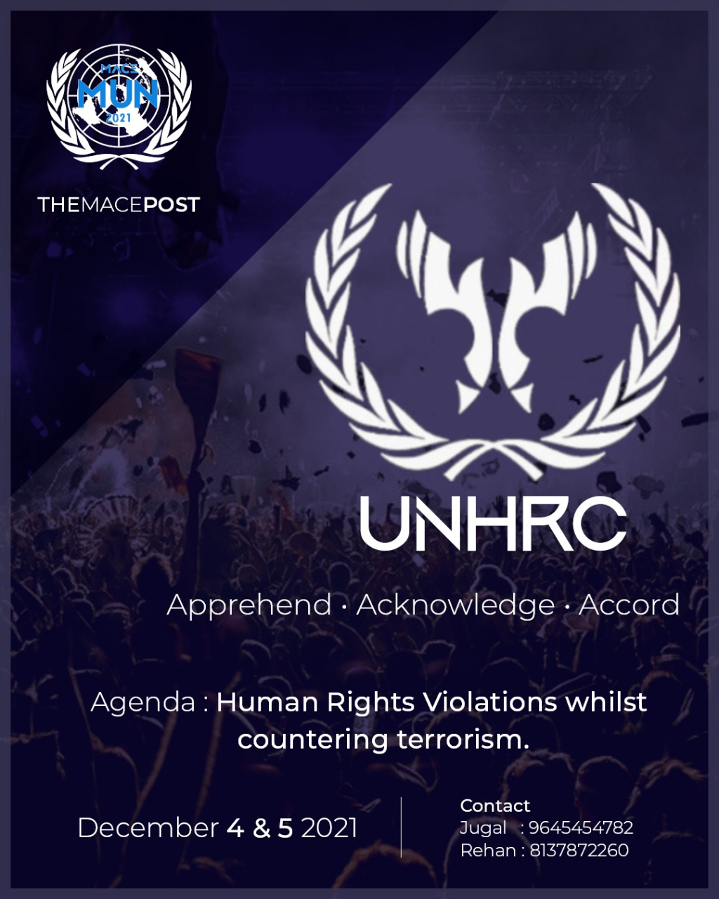

MACE

Mar Athanasius College of Engineering,popularly known as MACE, has been pioneering engineering education in Kerala since 1961 and is one to the top engineering institutions in the state. The students admitted here constitute the top 5 percentile of ranks in the Common Engineering Entrance Examination conducted by the Govt. of Kerala. Its managed by the Mar Athanasius College Association and aided by the Government of Kerala. The college offers B.Tech course in the following 5 fields of engineering: Mechanical, Civil, Electrical and Electronics, Electronics and Communication and Computer Science Engineering. Apart from these courses, there are also Post Graduation Courses which are inclusive of M.Tech, MCA, and Ph.D.
Set on a hilltop of a low lying mountain in the beautiful and green town of Kothamangalam, also known as the gateway to the hills, MACE lies en route and on the foothills of Munnar, a hill station in the western Ghats popular for vast spread of scenic tea plantations, beautifully designed township, recherché flora and fauna, massive peaks and dams. The institution is also in close proximity with Kochi, a major financial and cultural hub of Kerala, which is inclusive of the Jewish establishments of historic significance and home to the Kochi-Muziris Biennale.
MACE MUN

Over the past six years, Mar Athanasius College of Engineering, Kothamangalam, Ernakulam, Kerala in association with the online all student-run College Newsletter, THE MACE POST, has been organizing the MACE Model United Nations (MACE MUN) Conference. Selected committees of the United Nations are simulated with specified country matrices per committee. An agenda addressing a real world concern which plagues the idea of peaceful existence of the global citizens will be decided upon by the judges of each committee, hereafter referred to as the Executive Board. Interested candidates will apply and will be allotted a country each based on the aforementioned matrices per committee and also their experience. These allotted candidates , hereafter referred to as delegates , will have to extensively research their country's stance on the agenda. Also, they will have to master their country's foreign policy and the act of diplomatic debate. They will have to research and present their country's concerns and proposed solutions ( adhering to their national interests as well ) with the seriousness of an actual delegate of the United Nations. Parallely, to keep up with the proceedings of the committees, another faction of participants, hereafter referred to as the members of the International Press (IP) will be in charge of documenting the proceedings of the conference. The IP will be headed by the Head of the International Press, Editor in Chief and The Head of the International Press Photography. The Delegates, International Press Photographers and Reporters will be judged by the Executive Board, Head of International Press Photography ,Head of International Press and Editor in Chief respectively, on the basis of their performance in committee.
We are back this time with the much awaited Eighth Edition, MACE MUN 2021, aimed to scale higher and amalgamating a perfect blend of Diplomacy, Debating and Display of leadership skills at its finesse by endorsing the ability to APPREHEND the crises at hand, ACKNOWLEDGE everyone's stances, faults and solutions and ACCORD in good will.
Committees


United Nations Human Rights Council

When the world is in turmoil and the people in pain, there arises the need to empower, motivate and protect them to strive forward with courage and confidence. The presence and enforcement of norms and rules to safeguard the rights and liberty of people are the only tools to salvation at such hard times. The United Nations Human Rights Council (UN-HRC) promotes and protects the human rights of civilisations around the globe.
Kerala Legislative Assembly (KLA)
ജനാധിപത്യത്തിൻ്റെ ശ്രീകോവിലുകളാണ് നിയമസഭകൾ. കേരളത്തിലെ 140 നിയമസഭ മണ്ഡലങ്ങളിൽ ഒന്നിൽ നിന്ന് തെരഞ്ഞെടുക്കപ്പെട്ട ഒരു പ്രതിനിധിയാവാൻ നിങ്ങൾക്ക് അവസരം ലഭിച്ചാൽ കേരളത്തിൻ്റെ നിയമ നിർമാണ പക്രിയയിൽ എന്തൊക്കെ സംഭാവനകൾ നിങ്ങൾക്ക് നൽകാനാകും???
സമ്മേളനത്തിൻ്റെ പ്രധാന ചർച്ച വിഷയങ്ങൾ :
- കേരളത്തിലെ പൊതുമേഖല സ്വകാര്യവത്കരണം കാലത്തിന്റെ അനിവാര്യതയോ?
- സിൽവർ ലൈൻ പദ്ധതിയും മാധവ് ഗാഡ്ഗിൽ റിപ്പോർട്ടും - സമകാലിക പ്രായോഗികത
The Disarmamnet and International Security Committee (DISEC)
Ever felt concerned about the violence happening in the world? Ever felt the need for a change? Well then disec is for you.
The Disarmament and International security committee (DISEC), or the United Nations General Assembly First Committee (UNGAFC), is one of the six main committees in the general assembly of the UN where you can be the torch bearers who foster world peace and security. DISEC addresses issues related to disarmament challenges and threats to international peace.
At DISEC, you get the opportunity to explore, analyse and investigate issues pertaining to world peace.You get to resolve issues like terrorism and warfare with like minded enthusiasts.
INTERNATIONAL PRESS
We all have the right to freedom of opinion and expression; the right to hold opinions without interference and to seek, receive and impart information and ideas through any media,regardless of frontiers
Being members of the International Press (IP), you‚Äôll be a part of one of the most powerful and integral unit of the United Nations üá∫üá≥ . Rather than representing the interests of a single country, the IP allows you to act as unbiased journalists, reporting on the proceedings of each simulation in the conference. You can investigate committee debates, conduct interviews, edit articles, and cover press conferences.
Executive Board
Kerala Legislative Assembly

കേരള നിയമസഭയുടെ എക്സിക്യൂട്ടിവ് അംഗങ്ങളിതാ...
MACE ൻ്റെ പൂർവവിദ്യാർഥിയും MACE MUN ൻ്റെ കഴിഞ്ഞ സീസണുകളിലെ നിറസാന്നിദ്ധ്യവുമായിരുന്ന ജോർജ്ജ്കുട്ടി ജേക്കബ് കേരള നിയമസഭയുടെ പ്രസിഡൻ്റ് സ്ഥാനം വഹിക്കും. MACE MUN 2018ലെ USG ( സാമ്പത്തിക വിഭാഗം) ആയിരുന്ന അദ്ദേഹം MACE MUN 2019 ലെ Deputy Secretary General കൂടിയായിരുന്നു. അദ്ദേഹത്തിൻ്റെ നേതൃത്വപാടവവും സംവാദന ശേഷിയും അദ്ദേഹത്തെ ഈ സീസണിലെ മഹനീയ സാന്നിദ്ധ്യമാക്കുന്നു
വൈസ് പ്രസിഡൻ്റ് ജോസഫ് ജോസ് കേരള MUN ശൃംഖലയിലെ തന്നെ ചിരപരിചിതമുഖമാണ്. MACE ലെ പൂർവ വിദ്യാർത്ഥിയായ അദ്ദേഹം MACE MUN 2020 ൽ USG (പബ്ലിസിറ്റി വിഭാഗം) കൂടിയായിരുന്നു. അദ്ദേഹത്തിൻ്റെ പരിചയസമ്പന്നതയും കഴിവും കേരള നിയമസഭക്ക് ഒരു മുതൽക്കൂട്ടാണ്.
2019 മുതൽ MACE delegate squad ലെ അവിഭാജ്യഘടകമായ MACE ലെ അവസാനവർഷ മെക്കാനിക്കൽ വിദ്യാർത്ഥി അശ്വിൻ ടോം ആണ് ഈ സീസണിലെ സെക്രട്ടറി. MACE MUN 2019, CHRIST DOCUMUN 2019 എന്നിവയിൽ പങ്കെടുത്തതിൻ്റെ അനുഭവസമ്പത്തും വാക്ചാതുരിയും അദ്ദേഹത്തെ നമ്മുടെ അഭിമാനമാക്കി മാറ്റുന്നു
Kerala Legislative Assembly
Here we have the distinguished members of DISEC
The chair for DISEC this season is Eby Eldos, who has always been an integral part of MACE MUN since it’s beginning.From being the director of MACE MUN 2019 to being a part ofTedX, the MACE POST and the magazine committee,his excellent oratorical skills and varied experiences makes his presence an honour for the committee
A blend of grit, will and passion, Niranjana is a soul to be reckoned with. With several organisational and international accolades including being an invited speaker at Consortium of North American Peace Program and a fellowship at UN she is a well accomplished MUN-er. We are pleased to have her as the co-chair for this season
Ambitious, dedicated and driven Diya is an experienced MUN-er who has participated in the IIMUN USA chapter and several others , both as a delegate and an executive member. We are proud to have her as the rapporteur for MACE MUN this year
Kerala Legislative Assembly
These are the board members of UNHRC
Emil Kurian is an avid MUN-er, a content developer and a voracious public speaker. He is also a great food enthusiast. We are honoured to have him as our chair.
A smooth talker with a keen eye for detail, Jais Benny had formed himself into a fine MUN-er in the past years. Behind his confident exterior is a kind soul that looks to guide many delegates to better versions of themselves. We are pleased to have him as our co-chair.
For our Director, we have Shilpa C P. She is a confident soul with the will to push through all things in life. She has been a part of both MACEMUN and KERMUN. Her determination and passion are long honned skills.
INTERNATIONAL PRESS
Akhil Sreekumar is a person who doesn't need an introduction. An esteemed MUN-er, talented IP journalist, writer, debater, and an eminent orator, Akhil has participated and judged over 15 MUNS and has won accolades in many state level debates and panel discussion competitions. Above all, he is an automotive enthusiast, and foodie with a passion for learning. He is an active quizzer, who continues to inspire our budding youth, in developing their skills, and in instilling in them, a drive to keep learning.
Presenting the head of this year's International Press Committee, Mr.Akhil Sreekumar.